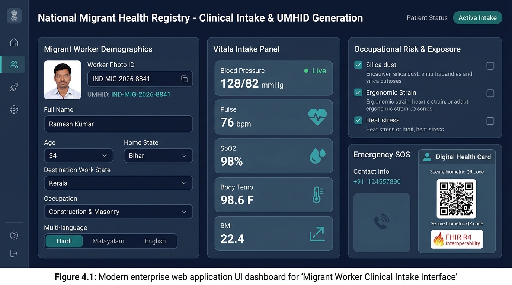
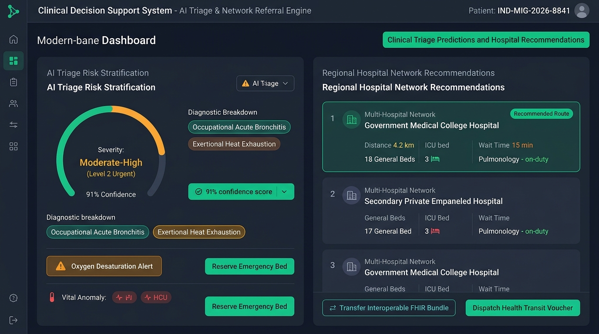
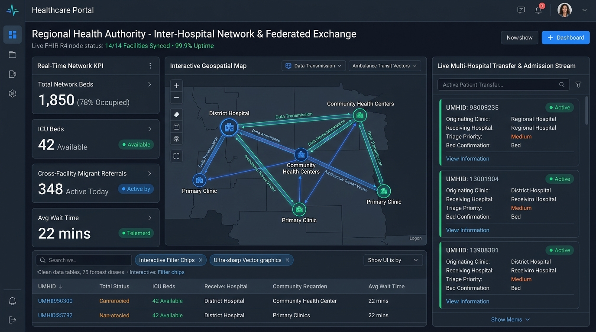
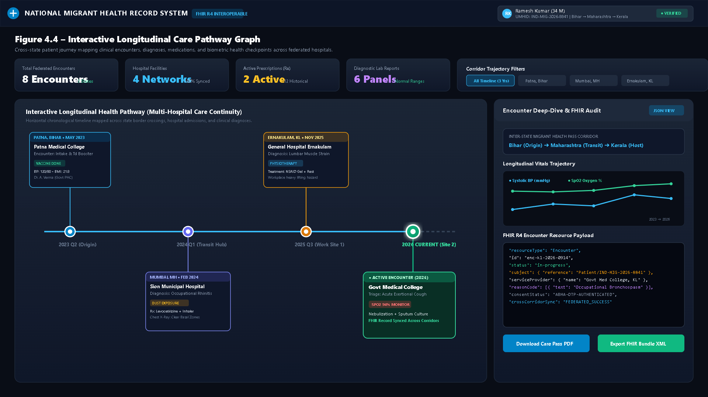
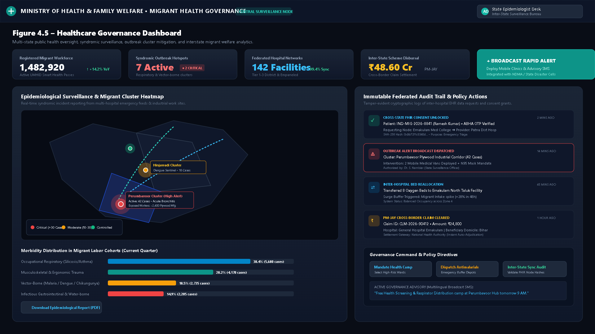
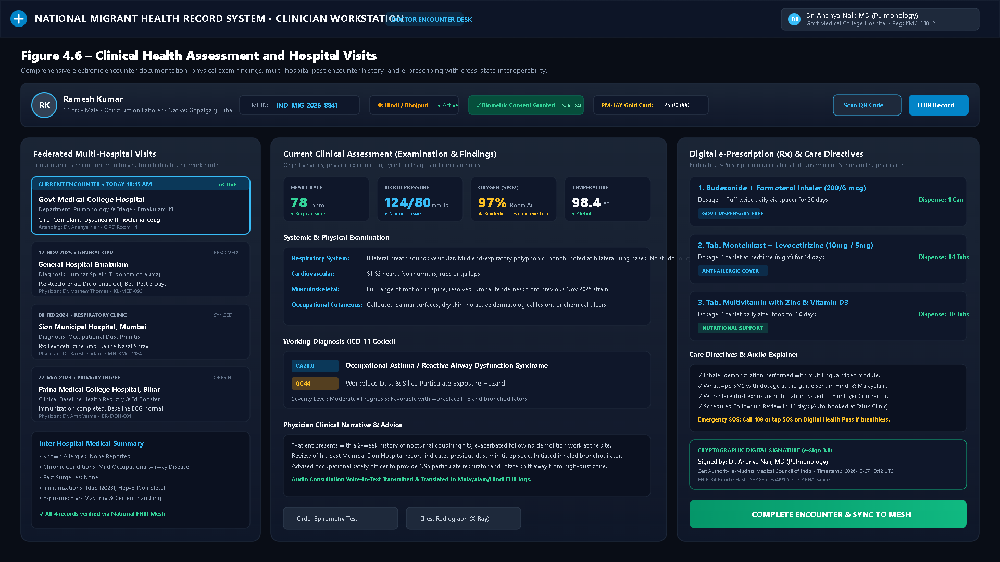

Figure 4.1 – Migrant Worker Clinical Intake Interface


Figure 4.1 Description: The Migrant Worker Clinical Intake Interface facilitates streamlined, multilingual registration and biometric enrollment for interstate migrant workers. It captures demographic identifiers, migration state corridors (Origin to Destination), occupational hazards (silica, ergonomic load, heat stress), live vital signs (BP, SpO2, Heart Rate, Temperature, BMI), and issues a verifiable FHIR R4 digital health pass with an encrypted QR code.
Figure 4.2 – Clinical Triage Predictions and Hospital Recommendations


Figure 4.2 Description: Clinical Decision Support System (CDSS) dashboard providing machine learning-powered triage stratification. The system analyzes incoming patient vitals, occupational hazards, and presenting complaints to predict clinical severity (Level 2 Urgent, 91% confidence), alongside multi-hospital network facility routing with real-time bed availability (ICU & General), transit times, and immediate referral slot booking.
Figure 4.3 – Healthcare Portal and Regional Hospital Network


Figure 4.3 Description: The Regional Healthcare Authority Portal visualizing the multi-hospital network topology. Features an interactive geospatial graph of primary clinics, community health centers, and tertiary medical colleges connected through a FHIR R4 federated data mesh. Displays live patient referral streams, transit vectors, and regional capacity load metrics.
Figure 4.4 – Interactive Longitudinal Care Pathway Graph


Figure 4.4 Description: The Interactive Longitudinal Care Pathway Graph solves clinical record fragmentation for transient migrant workers. It chronologically maps encounters across multi-state hospital visits (Bihar, Maharashtra, Kerala) from 2023 to 2026, visualizing connected clinical diagnoses, vaccination events, multi-year biometric trajectories (BP & SpO2 trends), and raw FHIR R4 JSON payloads.
Figure 4.5 – Healthcare Governance Dashboard


Figure 4.5 Description: Public health governance and epidemiological surveillance dashboard for state and national health authorities. Features syndromic outbreak geospatial heatmaps, migrant labor disease distribution analytics (respiratory, vector-borne, trauma), PM-JAY scheme cross-state financial settlement feeds, and an immutable cryptographic audit log of all electronic record access events.
Figure 4.6 – Clinical Health Assessment and Hospital Visits


Figure 4.6 Description: The Clinician Encounter Workstation used by attending physicians during outpatient consultations. Displays patient verification with biometric consent status, previous multi-hospital encounter cards with diagnoses, comprehensive objective physical exam findings (systemic auscultation, vitals), ICD-11 coded working diagnoses, e-prescribing with government dispensary links, and cryptographic digital signatures.